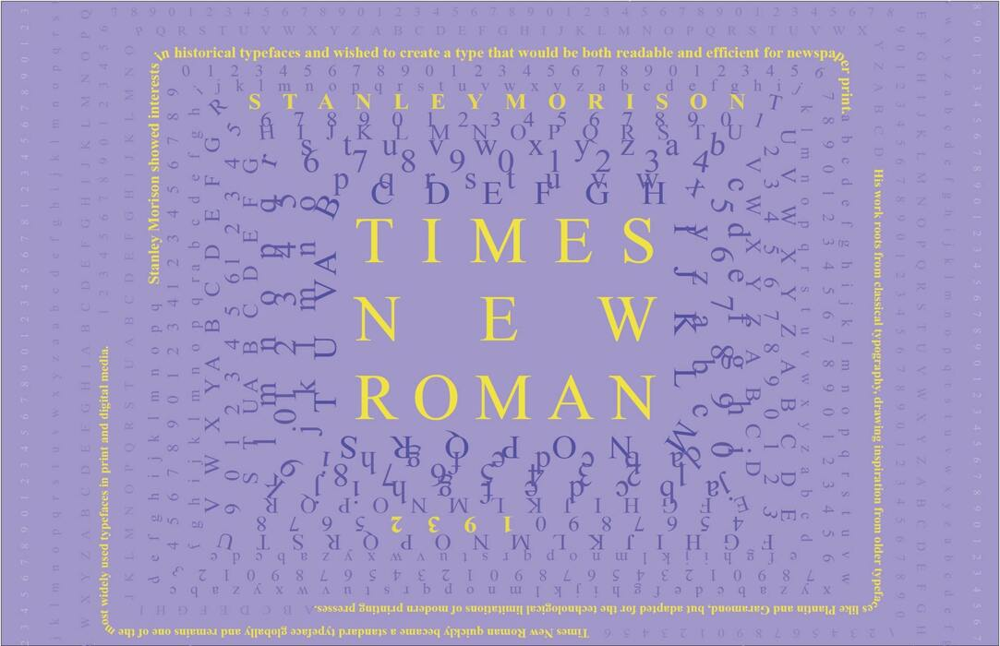
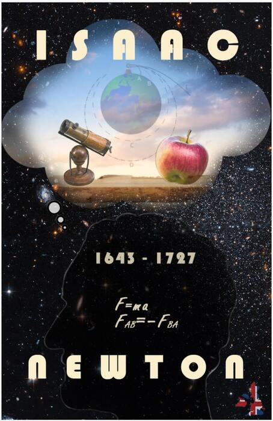
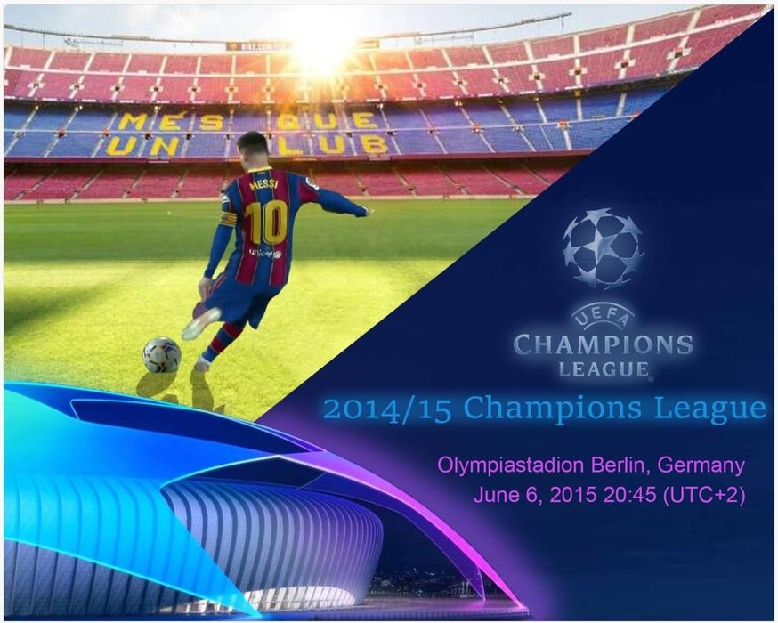

Times New Roman

This was my poster made with Illustrator designed with font named Times New Roman for typography.
Newton

This is my poster made with Photoshop designed to show what Isaac Newton has created in his life.
Champions League

This is a poster created with Photoshop for favourite event called Champions League. I have specifically chosen 2015 champions league final as my main poster.